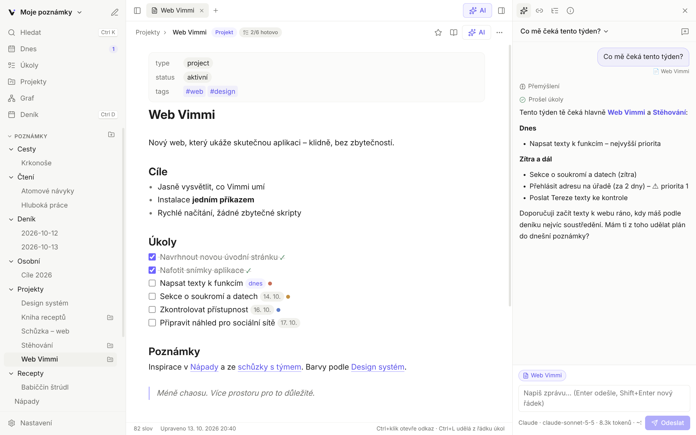
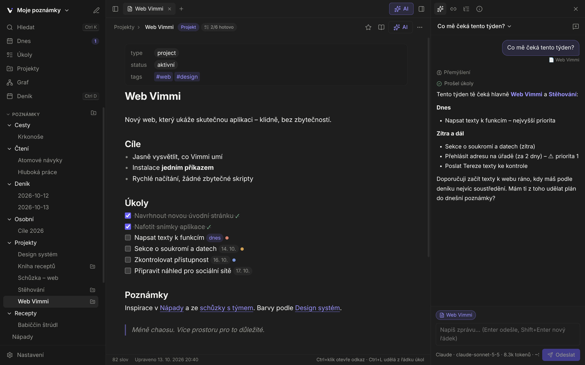
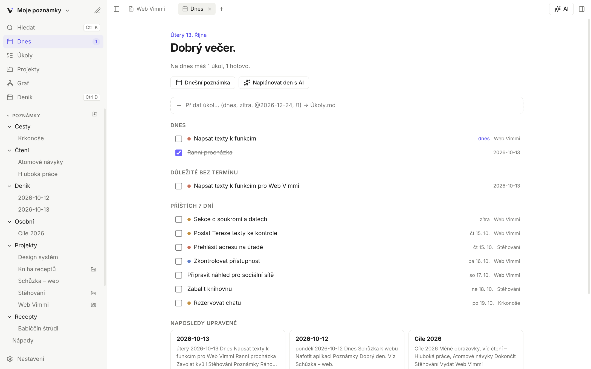
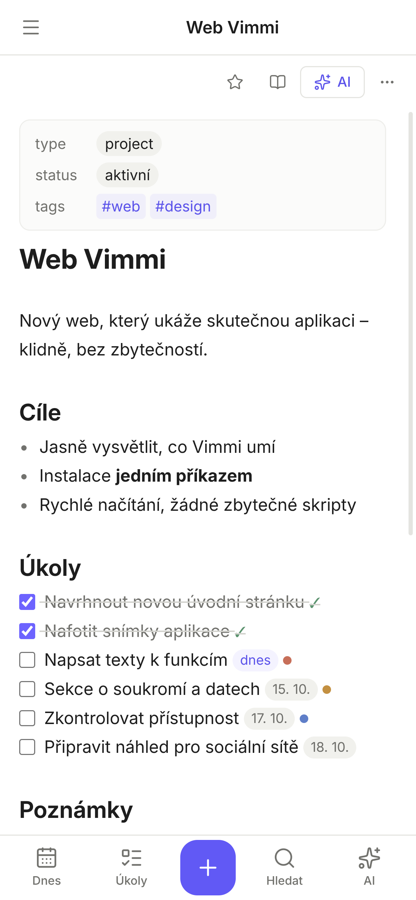
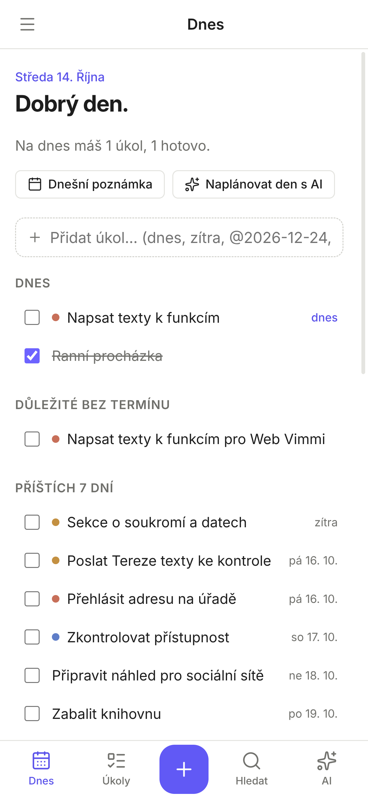
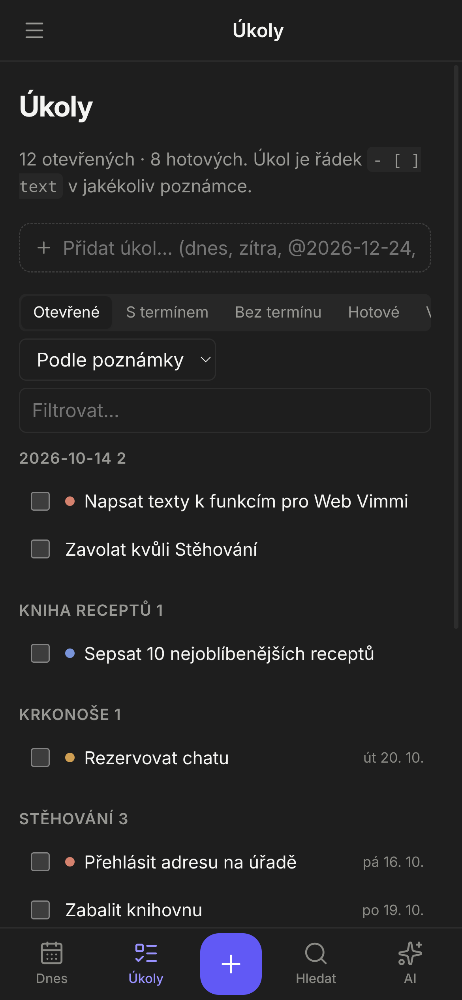

Psaní bez rozptylování
Editor Markdownu s živým náhledem: značky se schovají všude kromě řádku, na kterém píšeš. Zvýraznění kódu, vkládání obrázků a volitelný Vim režim.
Poznámky, úkoly a projekty v jednom klidném prostoru. Píšeš do obyčejných souborů Markdown, Vimmi je propojí – a AI asistent ti s nimi pomůže.
Pro Windows, Linux a iPhone · Synchronizace přes tvůj GitHub · Zdarma · Data zůstávají u tebe


Prohlídka
Žádné červené odznáčky, žádný hluk. Jen to, co právě potřebuješ.

Na telefonu
Rychlá poznámka v tramvaji, odškrtnutý úkol v obchodě, otázka pro AI cestou domů. Na iPhonu i Androidu, i bez signálu.



Funkce
Editor Markdownu s živým náhledem: značky se schovají všude kromě řádku, na kterém píšeš. Zvýraznění kódu, vkládání obrázků a volitelný Vim režim.
Napiš [[ a propoj. Zpětné odkazy, nepropojené zmínky a související poznámky ukážou souvislosti, na které bys zapomněl.
Řádek - [ ] úkol @2026-10-20 !1 v jakékoliv poznámce je úkol s termínem a prioritou. Všechny se sejdou v přehledu Dnes.
Úkoly, poznámky a zápisy ze schůzek k jednomu cíli pohromadě. S postupem a tím, co je na řadě.
Ctrl K prohledá názvy i obsah – bez ohledu na diakritiku. Ctrl P otevře všechny příkazy.
Celý trezor jako mapa. Nebo jen okolí jedné poznámky, s tagy i odkazy na poznámky, které teprve vzniknou.
Ctrl D otevře dnešní poznámku. Šablony pro schůzky nebo cokoliv dalšího s datem a názvem doplněným za tebe.
Na všechno je zkratka: nová poznámka, dnešní deník, AI asistent, přepínání karet. A pro fajnšmekry Vim režim.
Poznámky se synchronizují přes soukromý repozitář na tvém GitHubu – automaticky, s celou historií změn. Když něco upravíš na dvou místech najednou, nic se neztratí: druhá verze se uloží vedle.
Vimmi čte stejné soubory Markdown, stejné [[odkazy]], #tagy a frontmatter. Otevři existující trezor a pokračuj – nic se nepřevádí, nic se neuzamyká.
AI asistent
Zeptej se, co tě čeká tento týden. Nech si shrnout dlouhý zápis, vytáhnout z něj úkoly nebo najít poznámky, které spolu souvisí. Asistent si poznámky sám dohledá, přečte a rovnou upraví.
Tento týden tě čeká hlavně Web Vimmi a Stěhování:
Mám ti z toho udělat plán do dnešní poznámky?
Nejlepší podpora: přemýšlení, hledání na webu.
Stovky modelů jedním klíčem, i bezplatné.
Modely GPT s nástroji i hledáním.
Flash modely s bezplatnou úrovní.
Běží jen na tvém počítači, zdarma.
LM Studio, Groq, Mistral, DeepSeek…
AI je volitelná. Používáš vlastní API klíč a platíš poskytovateli jen to, co spotřebuješ – nebo zvolíš bezplatný či lokální model.
Soukromí
Každá poznámka je soubor .md ve složce, kterou si vybereš. Otevřeš ho čímkoliv, zálohuješ jak chceš.
Vimmi nemá servery ani přihlašování. Synchronizace jde přes tvůj vlastní soukromý GitHub a klíče jsou zašifrované v systémové klíčence.
S Ollamou běží i AI na tvém počítači. Jinak se poznámky posílají jen tehdy, když AI sám použiješ.
Stáhnout
Otevři terminál a vlož:
curl -fsSL https://raw.githubusercontent.com/gerchanisko/vimmi-app/main/install.sh | bash
UbuntuDebianMintFedoraArchManjaroopenSUSE
Skript doinstaluje, co chybí, sestaví aplikaci a přidá Vimmi do nabídky aplikací – odtud si ho připneš na panel. Instaluje se do domovské složky. Aktualizace: spusť příkaz znovu. Podrobnosti a odinstalace
Webová aplikace · funguje i offline · bez App Store
Verze pro macOS se připravuje. Do té doby funguje webová aplikace přímo v Safari.
Sledovat na GitHubuWindows 10 a 11 (64 bit) · Instalátor Vimmi-Setup.exe
Otázky
Aplikace je zdarma. Platíš jen za AI, pokud ji používáš – přímo poskytovateli podle spotřeby. Bezplatné modely (OpenRouter, Gemini) nebo lokální Ollama nestojí nic.
Ne. Vimmi je plnohodnotná aplikace na poznámky i bez AI. Asistent je volitelný doplněk, který zapneš vložením API klíče.
Na počítači ve složce, kterou si vybereš, jako obyčejné soubory .md; na telefonu v úložišti aplikace. Vimmi nemá žádný vlastní cloud ani účet. Mezi zařízeními se poznámky synchronizují přes soukromý repozitář na tvém GitHubu – nebo použij cokoliv jiného (Syncthing, Nextcloud, Dropbox).
Ano. Vimmi používá stejný formát – soubory Markdown, [[odkazy]], #tagy a frontmatter. Stačí otevřít existující trezor.
Každou změnu vidíš v chatu i s odkazem na poznámku. V nastavení si můžeš zapnout schvalování – pak ti asistent každou úpravu nejdřív ukáže jako rozdíl. Smazané poznámky jdou do koše uvnitř trezoru.
Na Windows 10 a 11, na Linuxu (Ubuntu, Debian, Mint, Fedora, Arch, openSUSE…) a jako webová aplikace na iPhonu, iPadu a Androidu. Nativní verze pro macOS se připravuje, do té doby funguje webová aplikace.
Zapni synchronizaci: vytvoř si soukromý repozitář na GitHubu, v Nastavení → Synchronizace vlož token a repozitář na počítači i v telefonu. Pak se poznámky synchronizují samy – při spuštění, chvíli po úpravě a každou minutu. Návod krok za krokem.